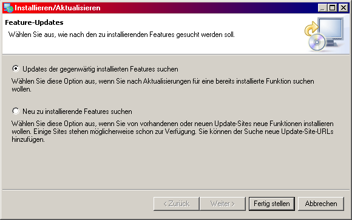
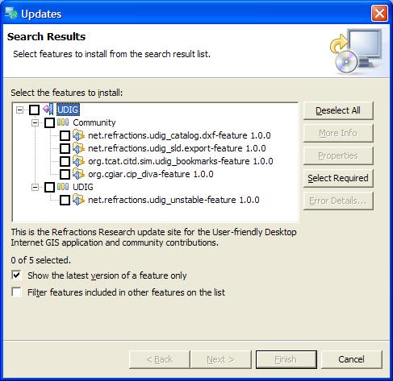
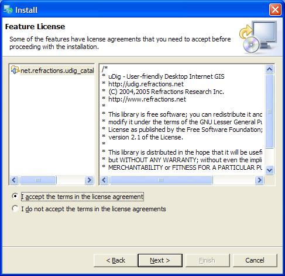
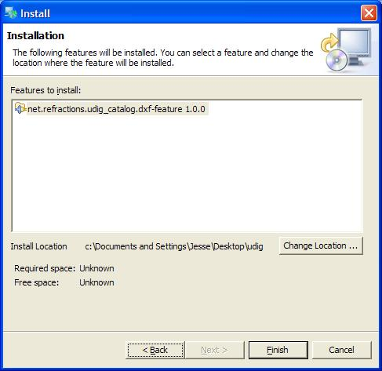
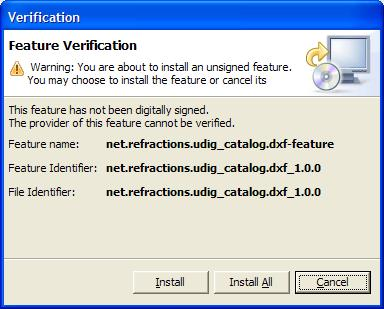
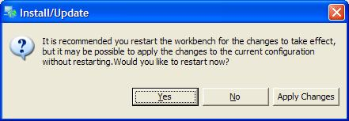

Verwenden des Update-Managers
Working with the Update Manager
Der Update-Manager ermöglicht es ihnen, im Internet nach neuen Erweiterungen (Plugins) sowie nach Aktualisierungen bereits installierter Plugins zu suchen und diese komfortabel zu installieren. Man startet den Update-Manager über das Menü: Hilfe > Finden und installieren...

Die Software aktualisieren
Zum Suchen nach Aktualisierungen vorhandener Komponenten wählen Sie im folgenden Dialog die Option Search for updates of the currently installed features aus.

Sind keine Aktualisierungen verfügbar, wird Ihnen dies gemeldet. Anderenfalls werden Ihnen die verfügbaren neuen Komponenten in einer Baumansicht präsentiert. Wählen Sie diejenigen Updates aus, die Sie installieren wollen und bestätigen Sie dies mit OK.
Neue Erweiterungen installieren
Der Update-Manager kann auch dazu verwendet werden, nach neuen Plugins zu suchen.
- Nach dem Anklicken von Hilfe > Finden und installieren... wählen Sie im folgenden Dialog die Option Search for new features to install aus.

- Bestätigen Sie mit Weiter.
- Ist der Server mit den Aktualisierungen noch nicht eingetragen (sollte standardmäßig eingetragen sein), so klicken Sie auf die Schaltfläche Neue entfernte Site ... und geben Sie dort die folgenden Daten ein: "UDIG" bzw. "http://udig.refractions.net/update/". Bestätigen Sie dies mit OK.

- Klicken Sie auf Fertigstellen.

- Die verfügbaren Plugins werden Ihnen nun in einer Baumansicht gezeigt. Wählen Sie diejenigen, die Sie herunterladen wollen.

- Bestätigen Sie die Lizenz, um das Plugin zu installieren (oder brechen Sie die Installation ab, falls Sie nicht einverstanden sind).

- Bestätigen Sie die Installation noch einmal mit "Installieren" oder "Alle Installieren". Ggf. werden Ihnen noch Sicherheitsinformationen angezeigt (Verifizierung).


- Ein Dialog wird Ihnen vorschlagen, uDig neu zu starten. Dies ist empfohlen, da einige Plugins erst nach einem Neustart funktionieren.

- Das bzw. die Plugins wurden nun installiert. Nun müssen Sie nur noch herausfinden, wie man sie nutzt...
(c) Copyright (c) 2004-2008 Refractions Research Inc. and others.